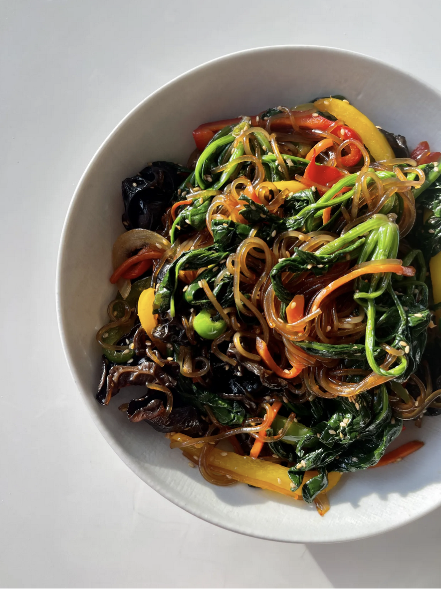

Fast and Easy Vegan Japchae

Description:
I've made japchae on my channel before but this is an updated recipe from my aunt 8) She's the one who told me that soaking the noodles beforehand can make this a one-pan dish. Usually with japchae, you have to cook the noodles, drain, and wash then stirfry. You also have to be careful with the timing so that the noodles do not bloat. With this pre-soaking method, everything can come together in ten minutes.
There's also a little secret ingredient: balsamic vinegar! This is by no means traditional but my own twist. I find that a little bit of the acidity really brightens the dish and balances out some of the unctuousness and saltiness that japchae can sometimes have. The vinegar will merely act as a flavor enhancer.
Ingredients:
- 200 g dry dangmyun/tapioca/glass noodles
- 1 cup blanched or fresh spinach
- 1 cup carrot, julienned
- 1 cup onion, julienned
- 1 bell pepper, julienned (preferably in different colors if you want a colorful japchae like this!)
- 15g dried woodear mushrooms
- ¼ cup water
- 1 tbsp sesame seeds
- 2 tbsp neutral oil
Sauce:
- ¼ cup light soy sauce
- 1 tbsp dark soy sauce
- 2 tbsp sugar
- 1 tbsp minced garlic
- 2 tbsp balsamic vinegar
- 2 tbsp sesame oil
- 1 tbsp neutral oil
Steps:
- Soak the noodles in cold water for 2 hours until doubled in size. You can also blanch the noodles according to package directions and rinse under cold water to stop cooking further. Soak the dried woodear mushrooms in water and 1 tsp of sugar as well.
- Heat a large skillet on high and drizzle neutral oil in a large skillet.
- Sautee the vegetables on high heat until the onions are translucent, but the vegetables are still crunchy. Make sure not to overcrowd your pan-- if you think that you will overcrowd the pan and steam the vegetables, sautee in batches.
- Set aside the sauteed vegetables.
- In the same pan, add the noodles, water, and sauce in.
- Simmer and stir-fry the noodles in sauce for one to two minutes or until it takes on color.
- Add the sauteed vegetables and mushrooms. Mix.
- Garnish with sesame seeds. Enjoy!
Source